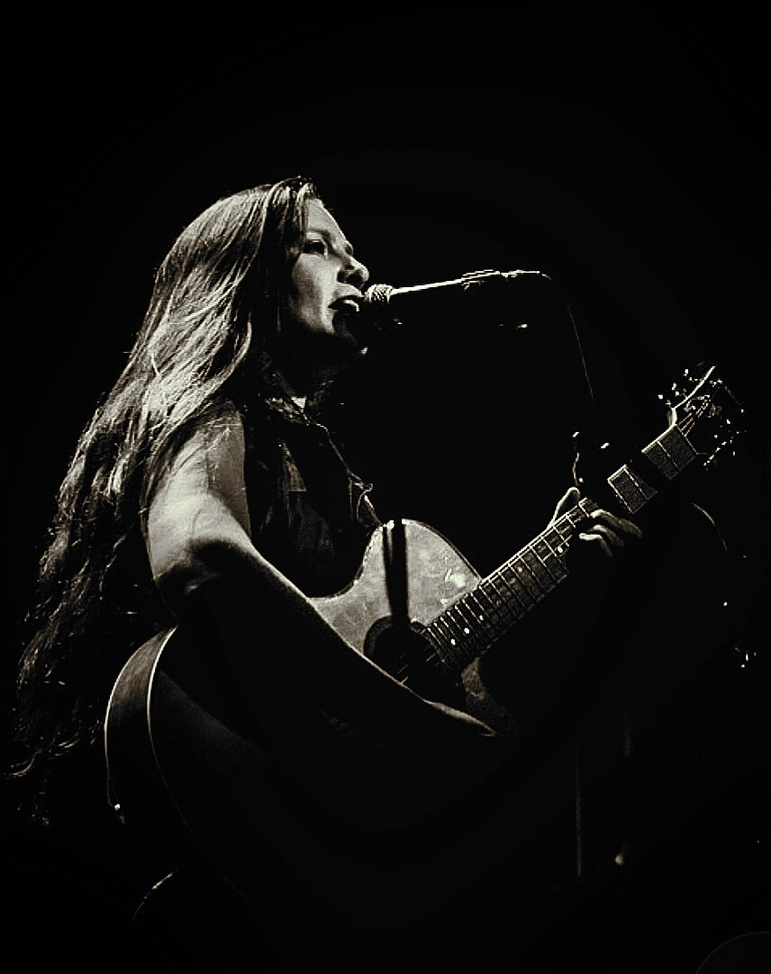
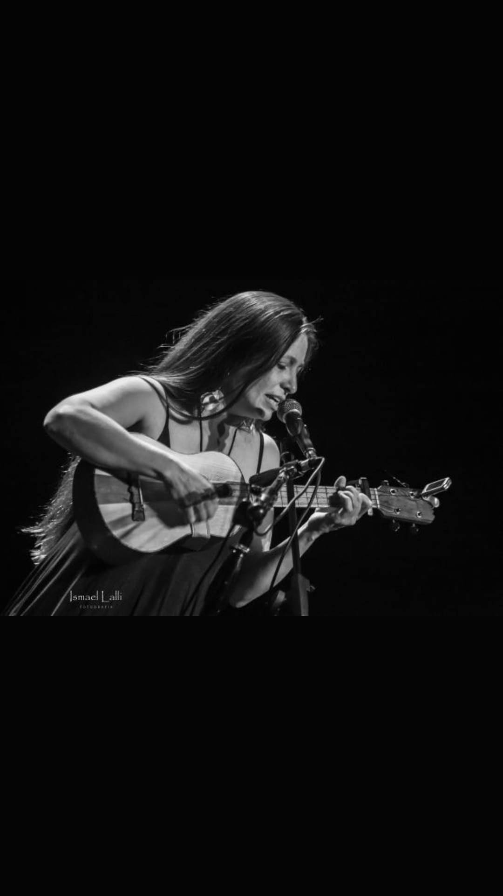

Folk • Rock • Raíz latinoamericana — canciones atravesadas por el paisaje patagónico, con una lírica profunda, poética, feminista y comprometida.
Es cantautora, multiinstrumentista y escritora, oriunda del Alto Valle de la Patagonia argentina. En sus composiciones, atravesadas por la sonoridad e imágenes propias del paisaje sureño, se fusionan géneros como el rock y el blues con la música popular latinoamericana y otras influencias de la música del mundo.
Su proyecto se presenta en diversos formatos (solo set, dúo, trío y full banda), con repertorio de canciones de su primer disco Despierta (2021) y material de su segundo álbum de estudio La forma del agua, además de versiones de clásicos que la influenciaron.
En ocasiones presenta un espectáculo multidisciplinario que incluye poesía de su libro La tumba de las aves.

